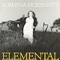

Celtic Lyrics Corner > Artists & Groups > Loreena McKennitt > Elemental > She Moved Through The Fair
|  | She Moved Through The Fair |
| Credits : | Traditional; arranged by Loreena McKennitt |
| Appears On : | Elemental |
| Language : | English |
| Other Versions : |
"
Our Wedding Day
" on Anúna's album Celtic Origins
" She Moves Through The Fair " on Mary Black's album Collected " She Moved Through The Fair " on Máire Brennan's single Against The Wind " She Moved Thru' The Fair " on the Celtic Woman soundtrack " She Moved Thro' The Fair " on Órla Fallon's album The Water Is Wide " Our Wedding Day " on the Lord Of The Dance soundtrack " She Moved Through The Fair " on Méav Ní Mhaolchatha's album Méav |
Lyrics :
My love said to me, "My mother won't mind
And me Father won't slight you for your lack of kind"
Then she stepped away from me and this she did say
"It will not be long, love, 'til our wedding day"
She stepped
away from me and she moved through the fair
And fondly I watched her move here and move there
She went her way homeward with one star awake
As the swans in the evening move over the lake
The people were saying, "No two e'er were wed
But one has a sorrow that never was said"
And she smiled as she passed me with her goods and her gear
And that was the last that I saw of my dear
I dreamed it last night that my true love came in
So softly she entered, her feet made no din
She came close beside me and this she did say
"It will not be long, love, 'til our wedding day"